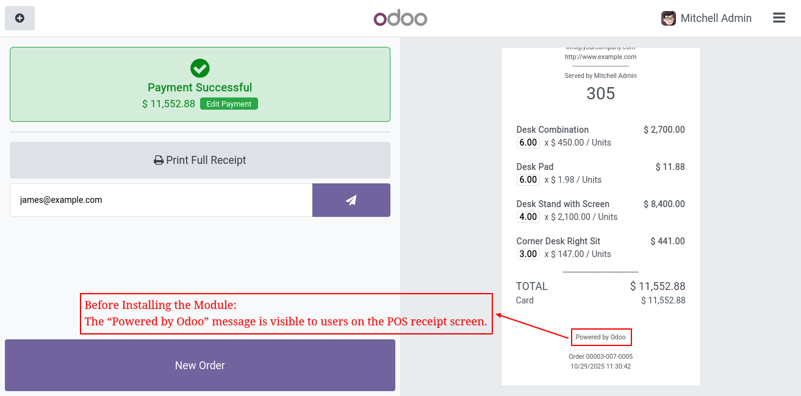
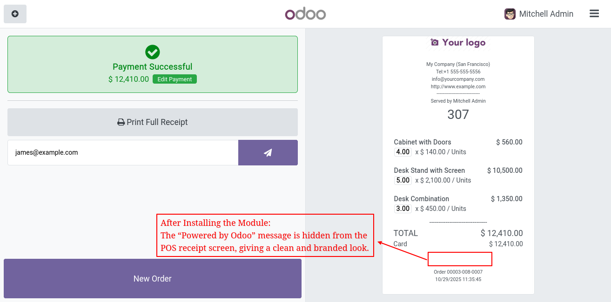

The POS Hide Powered by Odoo Message on Receipt module removes the default “Powered by Odoo” message from the Point of Sale receipt screen. It helps maintain a clean, professional receipt layout that aligns with your business branding — without modifying any core POS files.
Before installation, the “Powered by Odoo” message is visible to users on the POS receipt screen.
After installation, the “Powered by Odoo” message is automatically hidden from the POS receipt screen, providing a clean and professional appearance.
We specialize in Odoo customizations, modules, and business solutions. Get in touch with us for support or custom development.
✅ Buy our module and get up to 90 days of free support, including bug fixes and error resolution for this specific module.
✉️ Get in Touch